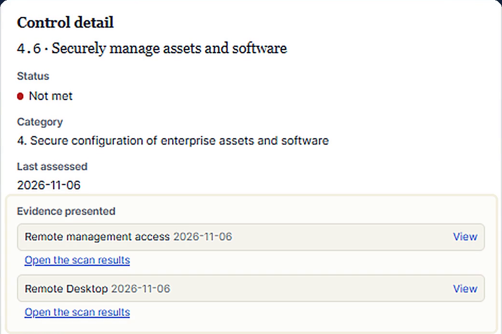
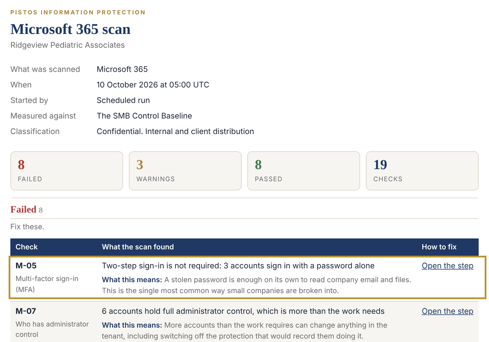
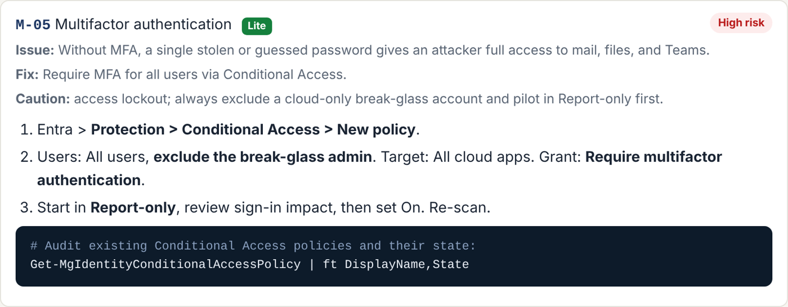
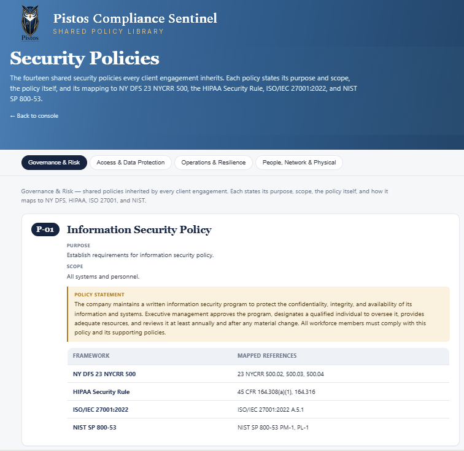
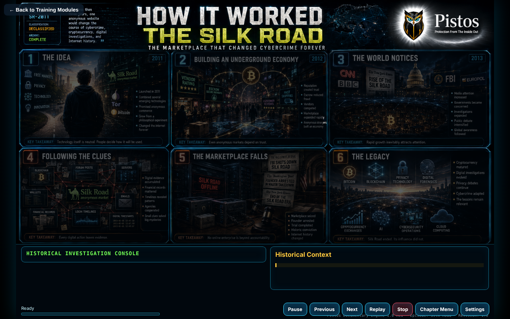

See what’s in place and what needs work.
Pistos Compliance Sentinel brings your requirements, scan results, training records, and policies together. See what supports each answer, assign open items, and prepare reports for review.

A control from finding to follow-up
Follow the evidence for one failed check.

What you can do in PCS

Risk assessment
PCS marks every safeguard that applies to your company as met, not met, or lacking evidence, and explains in one line why any safeguard falls short.

Regulatory compliance
PCS presents each regulation requirement by requirement. A requirement counts as met only when every control behind it is met.

Risk register
Every safeguard you haven’t met is added to the risk register automatically. It remains there until someone fixes it or documents why the company accepts the risk.

Scans
Skopein scans your systems on a schedule, and PCS attaches each result to the control it supports.

Remediation
For every failed security check, PCS provides easy-to-follow manual fixes, and remediation scripts for bulk updates. Once the fix is applied, the next scan verifies its effectiveness and PCS updates the control’s compliance status accordingly.

Policies and plans
PCS provides eighteen security policies that are ready to adopt, along with an incident response plan and a disaster recovery plan.
Filings and attestations
PCS stores your compliance filing receipts and the signed attestations that serve as evidence where a scan can’t reach.
Assign training and record completions.
The training library contains 560 narrated courses, 14 documentaries, and 4 games. PCS records each completion against the employee and files it as evidence that your staff has been trained.

Draft policies, training, and remediation guidance.
Custom reports
PCS writes management and technical reports specific to your business.
Training
PCS produces training videos and exercises relevant to your business.
Remediation scripts
PCS writes remediation scripts for a broad range of programming languages and SQL platforms.
Scanner maintenance
AI maintains the scanners and keeps their checks current.
System documentation
PCS writes your system documentation and keeps it current.
A Pistos compliance professional reviews and approves everything AI produces, and your data is never used to train AI models.
Cybersecurity Leadership and Support
Get help running your compliance program.
If your company doesn’t have a dedicated security team, a senior Pistos advisor serves as your CISO, overseeing your cybersecurity program, regulatory filings, board reporting, and regulatory inquiries. If you already have a security manager, PCS automates much of the technical and administrative work, allowing your staff to focus on strategy, risk management, and program oversight.